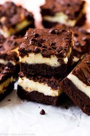

Home Page
Cottage Cheese Brownie Batter

Description
Making this cottage cheese brownie batter snack means that you can enjoy the lusciousness of brownie batter
without wheat flour or eggs.
Ingredients
- 1 cup 4% milkfat small curd cottage cheese
- 6 tablespoons maple syrup, or to taste
- 3 tablespoons unsweetened cocoa powder
- 3 tablespoons quick oats
- 1 tablespoon almond butter
- 1 teaspoon vanilla extract
- 1 teaspoon instant espresso powder (optional)
- 1 pinch salt, or to taste
- 1 cup blanched superfine almond flour
- 5 tablespoons semisweet chocolate chips
Instructions
- Place cottage cheese, maple syrup, cocoa powder, oats, almond butter, vanilla, espresso powder, and salt
into the cup of a high-speed blender. Blend until ingredients are smooth. Add almond flour to blender and
blend until combined. Pulse if necessary to prevent warming the mixture.
- Pour batter into a bowl and fold in chocolate chips. Serve immediately, or cover and keep stored in the
refrigerator for up to 5 days.
Happy cooking!